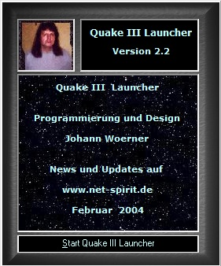
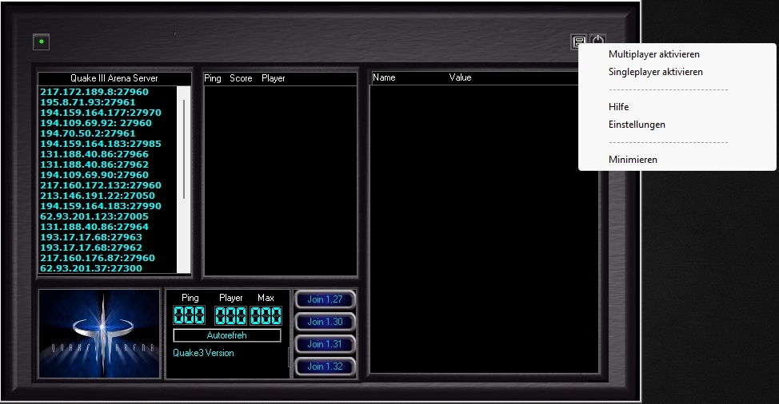

Programmierung und Design: Johann H. Wörner – München, Deutschland
Entwicklungszeitraum: 2000–2004
Der veröffentlichte Launcher stellte die frühe Entwicklungsphase eines umfangreicheren launcher- und netzwerkbasierten Softwaresystems dar.
Im Verlauf der Entwicklung wurden Funktionen für Serverabfragen, Versionsverwaltung, prozessgesteuerte Spielstarts, dynamische Netzwerkkommunikation sowie verschiedene Betriebsmodi integriert.
Das Projekt wurde über mehrere Jahre kontinuierlich erweitert und diente als Grundlage für weitere technische Experimente im Bereich launcherbasierter Netzwerksoftware.
Der Net Spirit Launcher wurde zwischen 2000 und 2004 als netzwerkfähiger Launcher für Quake III Arena entwickelt.
Die Software kombinierte Serverbrowser, versionsabhängige Spielstarts, Netzwerkabfragen und automatisierte Launcherfunktionen.
Viele ursprüngliche Netzwerkdienste, Serverlisten und Webressourcen sind heute nicht mehr verfügbar.
Der Launcher entstand während der frühen Online- und LAN-Gaming-Ära von Quake III Arena und kombinierte bereits mehrere Funktionen, die später in modernen Spielelaunchern üblich wurden.


Historische GUI-Ansichten des Launchers.